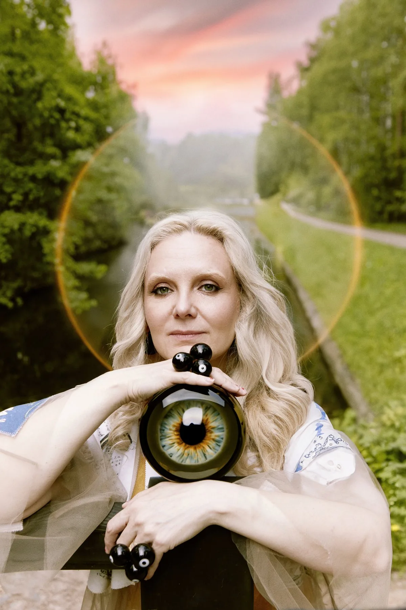
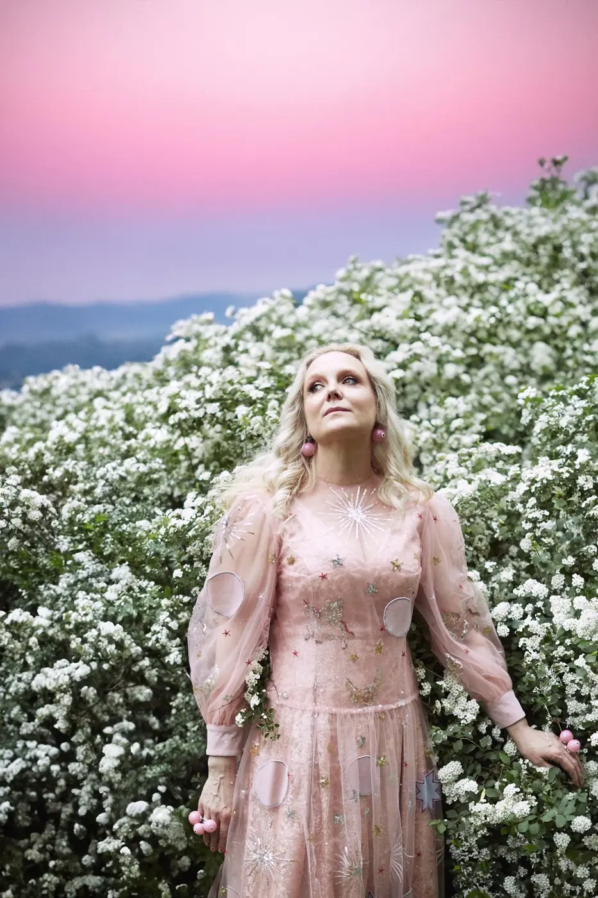
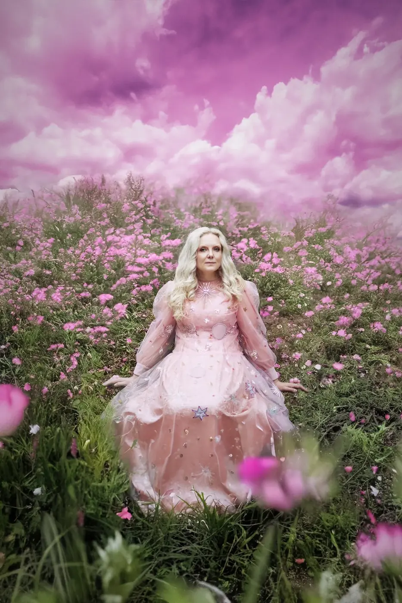

A portrait series finished like paintings. I shot Lena by the water and in white blossom, then extended each frame with AI and painted over it by hand: a pink sky, a field of flowers, a cloud to lie on.


I shoot artists for covers, posters and press.
Working worldwide, remotely. Invoicing in USD or EUR.